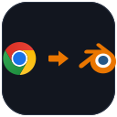

Browser image → Blender reference. In one paste.
Chrome Reference Drop turns images from Chrome (or any browser) into real reference image empties in your scene — no save-to-desktop detour.
Grab the orange button and drop it on a running Blender window (or onto Preferences → Get Extensions). First drop may add the update repository; drop a second time to install — same flow as Blender Lab’s MCP add-on.
Prefer menus? Download the zip → Blender → Edit → Preferences → Extensions → Install from Disk. Enable Allow Online Access if you want URL downloads.
Why this exists
| What you try | Stock Blender | With this add-on |
|---|---|---|
| Drop a file from Explorer | Reference empty ✓ | Also works |
| Chrome “Copy image” | Nothing | Ctrl+Shift+V → reference |
| Paste image URL | Nothing | Downloads → reference |
| URL-only browser drag | No Python hook | Use paste / From URL (honest limit) |
After install
- Enable “Chrome Reference Drop” under Preferences → Extensions / Add-ons.
- Optional: turn on Allow Online Access for http(s) image downloads.
- In the 3D View use Ctrl+Shift+V, or Object → Reference Images.
Also included
From URL…
Paste an image address. Data-URLs and normal https images are cached locally then loaded as empties.
Import files
Classic file browser for PNG/JPG/WebP/… if you already saved them to disk.
View-aligned placement
New refs face the active viewport and land near the 3D cursor / view focus.
Open source
GPL-3.0-or-later. Issues & PRs welcome on GitHub. CI builds the install zip on every release tag.